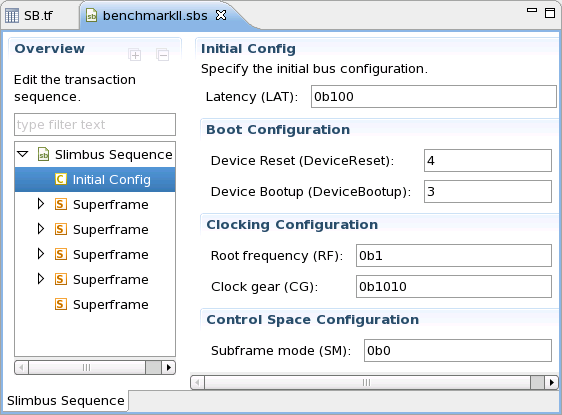
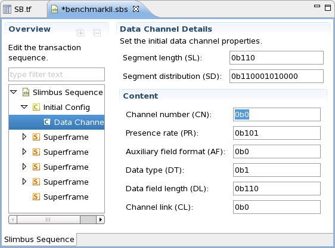
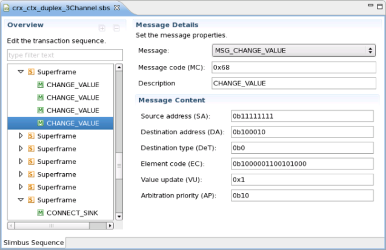
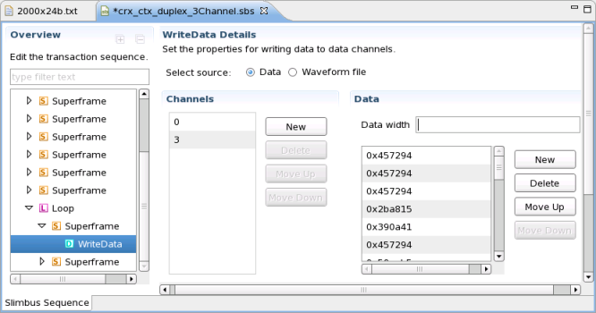
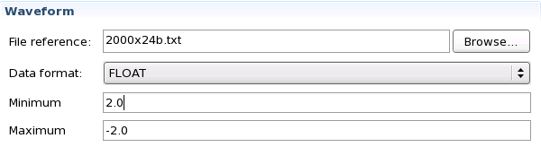

Displaying and editing the sequence file
Sequence files are are coded as xml files. SmarTest provides a special editor with which you can display and edit sequence files without having to take care of the xml file structure.
A sequence file consists of an initial configuration block followed by a sequence of superframes. A special loop construct allows you to repeat a sequence of several superframes as often as required.
The sequence files are stored in the xml subdirectory of the TM project and have the extension .sbs. In order to open them go to this directory in the Project Explorer, right-click the file you want to access, select the option Open with, and then Slimbus Sequence Editor.
Initial configuration block
This block describes the state of the device at test start. In the sequence file editor, it looks as follows:

The individual attributes have the following meaning:
Attribute |
Explanation |
|---|---|
Latency |
This parameter defines how many slots are to be inserted between a request and the reply of the device. This value can be changed on the message level. |
Device reset |
This parameter defines how many frames are to be inserted before the actual boot sequence. This attribute is only used for dynamic booting (actually it is a parameter of the PA frame for dynamic booting), but it must also be present if user defined booting is applied. |
Device boot-up |
This parameter defines the number of empty superframes that are to be executed before the actual test. These superframes are also stored in the Superframe Viewer file if creation of this file is activated. This attribute is only used for dynamic booting, but it must also be present if user defined booting is applied. |
Root frequency |
These two parameters define the bus frequency, see section 6.2 of the SLIMbus specification. Note that these parameters have no effect on the SmarTest timing. It is the responsibility of the user to ensure that the bus frequency specified here and the SmarTest timing are compatible. |
Clock gear |
|
Subframe mode |
This parameter defines the initial subframe mode. See section 6.3.1.4 of the SLIMbus specification. |
The initial configuration can also contain data channel definitions. An example is:

For details on data channel definitions see chapter 6.4 of the SLIMbus specification.
Super-frames
A superframe contains a (possibly empty) sequence of messages and write actions.
Messages
The following picture shows a CHANGE_VALUE message:

All messages and message parameters are described in chapter 11 of the SLIMbus specification.
Write actions
Write actions write a sequence of values to selected channels. The value sequence can either be read from the sequence file or from an external file. The following picture shows the first case. The data displayed on the right side are written to channels 0 and 3. The superframe to which the write action belongs is part of a loop.

The Data width field, which specifies the bit width of the input data, field is optional, and in this example empty. The input bit width must only be specified if it is different from the bit width of channel to which the data is written.
If the data is stored in an external file, you must activate the radio button Waveform file. In this case you must enter the necessary information in the Waveform section of the editor window, which is located below the Channels and Data sections and looks as follows:

In the topmost field, you must specify the external file. This is a text file every line of which contains one value.
The next field defines the data format. Possible options are FLOAT, BINARY, DECIMAL, and HEXADECIMAL. The last two fields are only needed for data format FLOAT. Note that the input bit width of the waveform file must equal the bit width of the channel for all data formats except FLOAT.
Functional changes
- Introduced in SmarTest 7.2.1